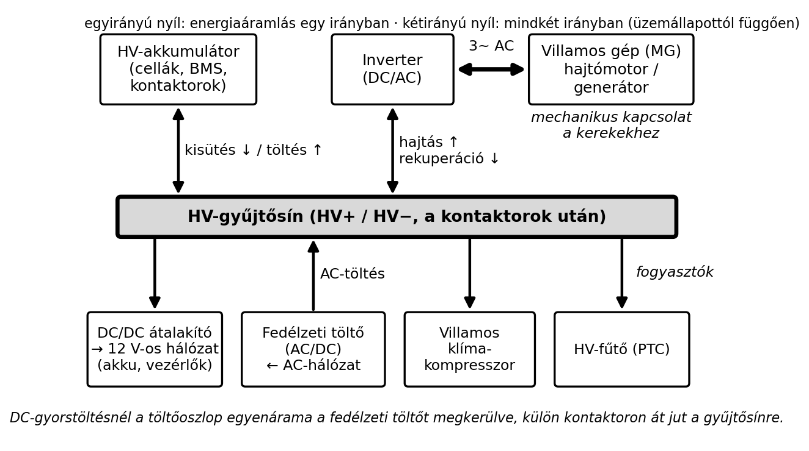

A szervizbe érkezik egy jármű, amelynek a csomagtartójában narancssárga kábelkötegek futnak, a motorháztető alatt pedig a benzinmotor mellett egy villamos gép is van. A munkafelvételi lapon csak annyi áll: „hibrid, nem indult reggel”. A szerelőnek néhány perc alatt el kell döntenie, milyen hajtással dolgozik, mert egészen más a helyes diagnosztikai út egy 48 V-os enyhe hibrid, egy külső tölthető plug-in hibrid vagy egy tisztán akkumulátoros elektromos jármű esetén. Ha minden „hibrid” feliratú autót ugyanúgy kezel, hibásan értelmezheti a tünetet, a hibakódot és a biztonsági előírásokat is.
A fejezet célja, hogy a tanuló biztonsággal besorolja a járművet a hibridizálási fokozat és a hajtáslánc-architektúra szerint, és megnevezze a nagyfeszültségű (HV) rendszer fő egységeit. Ez az alap a későbbi akkumulátoros, motoros és feszültségmentesítési fejezetekhez.
Képzeljünk el egy modern plug-in hibridet. A motorháztető alatt bal oldalon egy 1,6 literes benzinmotor helyezkedik el, tőle jobbra egy villamos hajtógép, kettejük között pedig egy bolygóműves teljesítményelágazó egység. A csomagtér padlója alatt nagy feszültségű lítiumion-akkumulátor található, amely narancssárga, árnyékolt kábeleken keresztül kapcsolódik a teljesítményelektronikához. Az utastér fűtését nem a motor hulladékhője, hanem elektromos fűtőelem végzi, a klímakompresszort pedig villanymotor hajtja, mert akkor is hűtenie kell, amikor a benzinmotor áll. Ez a leírás nem egyetlen jármű pontos tervrajza, hanem a tipikus HV-elrendezés vázlata; a konkrét elrendezés gyártónként és típusonként eltér.
A HV-rendszer egységeinek és energiafolyamának áttekintését mutatja az alábbi ábra.

Az ábra az energia útját mutatja: a HV-akkumulátor a kontaktorokon át a HV-gyűjtősínre kapcsolódik, és onnan adja vagy oda fogadja vissza az energiát. Az inverter a sín egyenfeszültségéből a villamos gép háromfázisú áramát állítja elő (hajtás), rekuperációkor pedig fordítva, a gép generátoros áramát egyenirányítja a sín felé. A HV-fogyasztók (villamos klímakompresszor, HV-fűtő) közvetlenül a sínről kapnak energiát, nem a villamos gépen keresztül; a DC/DC átalakító a sínről táplálja a 12 V-os hálózatot, a fedélzeti töltő pedig AC-töltéskor a hálózat felől tölti a sínen át az akkumulátort. A BMS (akkumulátor-felügyelet) a cellákat, a kontaktorok pedig az akkumulátor leválasztását védik.
Definíció. A hibrid hajtáslánc olyan járműhajtás, amelyben legalább két eltérő energiaátalakító működik együtt. Személygépkocsikban ez általában belső égésű motor és villamos gép kombinációja; a cél a fogyasztás, a károsanyag-kibocsátás csökkentése és a komfort növelése.
Definíció. A hibridizálási fokozat azt fejezi ki, hogy a villamos gép és az akkumulátor mekkora teljesítményt és funkciót vállal a hajtásban. A fokozatok: micro (mikro), mild (enyhe), full (teljes) és plug-in (külső tölthető) hibrid.
A négy fokozatot az alábbi táblázat foglalja össze.
| Fokozat | Jellemző feszültség | Villamos teljesítmény | Fő funkció | Tipikus megoldás |
|---|---|---|---|---|
| Micro | 12 V | 2–5 kW | start-stop, indítás | erősített indítómotor-generátor |
| Mild | 48 V (ritkábban 36 V) | 5–20 kW | rekuperáció, gyorsítási rásegítés, vitorlázás | szíjhajtású vagy főtengelyre szerelt gép |
| Full | 200–400 V | 20–60 kW | rövid elektromos haladás, rekuperáció | párhuzamos vagy teljesítményelágazásos |
| Plug-in | 300–800 V | 50–150 kW | hosszabb elektromos hatótáv, külső töltés | párhuzamos, teljesítményelágazásos vagy soros |
Az értékek tanulási példák, típusonként eltérnek (ellenőrizendő: gyártói adat).
A micro hibrid nem tisztán elektromosan haladó jármű; csupán a start-stop rendszer és a fékezési energia kis mértékű visszatáplálása jellemzi. A mild hibrid már képes a jármű lassításából energiát visszanyerni, gyorsításkor nyomatékot adni, de a gyakorlatban rendszerint nem tud hosszan tisztán elektromosan közlekedni. A full hibrid rövid, alacsony sebességű elektromos szakaszokra képes, belső égésű motorja kikapcsolhat, és a fékezési energia visszatöltődik. A plug-in hibrid nagyobb akkumulátora külső hálózatról tölthető, így a mindennapokban hosszabb elektromos hatótávot biztosít.
Előírás. A hibrid és elektromos járművek típusjóváhagyására az uniós keretrendelet és az ENSZ-EGB előírások vonatkoznak (ellenőrizendő: az (EU) 2018/858 keretrendelet, az ECE R100 elektromos hajtásbiztonsági, az ECE R85 hajtásteljesítmény-mérési előírás és a fékezési előírások).
A hibrid hajtáslánc nemcsak a villamos részvétel mértékében, hanem a belső égésű motor és a villamos gép mechanikai kapcsolatában is eltérhet.
Definíció. Soros hibrid esetén a belső égésű motor kizárólag egy generátort hajt, amely villamos energiát termel; a kerekeket mindig a villamos hajtómotor hajtja. A belső égésű motor és a kerekek között nincs mechanikus kapcsolat. Így a belső égésű motor olyan fordulatszám- és terheléstartományban üzemeltethető, ahol a hatásfoka kedvező.
Definíció. Párhuzamos hibrid esetén a belső égésű motor és a villamos gép is mechanikusan hozzá tud kapcsolódni a hajtáslánchoz. A két nyomaték összegezhető: egyik, másik vagy mindkettő hajthat. A villanymotor jellemzően ugyanazt a tengelyt hajtja, mint a belső égésű motor, esetleg tengelykapcsolóval leválasztható.
Definíció. Teljesítményelágazásos (power-split) hibrid esetén a belső égésű motor nyomatékát bolygómű osztja meg a hajtás és a generátor között. A bolygómű egy része a kerekeket hajtja, másik része generátort forgat, a harmadik pedig a belső égésű motorral kapcsolódik. A rendszer a soros és a párhuzamos üzem előnyeit ötvözi; hagyományos fokozatos váltóra gyakran nincs szükség.
A három architektúra besorolásához a gyártói javítási útmutató kapcsolási rajza és a hajtáslánc-ábra az elsődleges forrás. A mai plug-in hibridek többsége párhuzamos vagy teljesítményelágazásos, a kisebb hatótávnövelők soros elrendezésűek.
A besorolás kulcsa az, hogy hol fut mechanikai (vastag) vonal a belső égésű motortól a kerekekig: sorosnál sehol, párhuzamosnál a tengelykapcsolón és a váltón át, teljesítményelágazásosnál a bolygóművön át, ahol a bolygókerék-tartót a BÉM, a napkereket az MG1 generátor, a koszorúkereket az MG2 és a kimenet köti. Az interaktív változatban üzemmód (elektromos haladás, gyorsítás, töltés menet közben, rekuperáció) választható, és az aktív energiautak kiemelődnek.
Definíció. Akkumulátoros elektromos jármű (BEV, battery electric vehicle): kizárólag akkumulátorról táplált villamos hajtómotorral rendelkezik; nincs belső égésű motorja. Az energiát a HV-akkumulátor tárolja, a hajtást egy vagy több villamos gép végzi.
Definíció. Hatótávnövelő jármű (REEV, range-extended electric vehicle): soros hibrid, amelyben a kerekeket mindig villanymotor hajtja, de egy kis belső égésű motor generátort hajtva növeli az akkumulátor hatótávját. A belső égésű motor nem kapcsolódik mechanikusan a kerekekhez.
Definíció. Üzemanyagcellás jármű (FCEV, fuel cell electric vehicle): az elektromos energiát hidrogénből üzemanyagcella állítja elő; az akkumulátor puffertárolóként segíti a gyors terhelésváltozásokat. A kerekeket villanymotor hajtja. A jármű hidrogént tankol, nem hálózati áramról töltődik.
Összefüggés. A fenti fogalmak egymástól jól megkülönböztethetők: a BEV-ben nincs belső égésű motor, a REEV-ben van, de nincs mechanikus hajtáskapcsolata a kerékhez, a FCEV-ben az energiaforrás legfontosabb átalakítója az üzemanyagcella, a hibridben pedig a belső égésű motor és a villamos gép együtt dolgozik.
A 48 V-os rendszer a mild hibrid tipikus megvalósítása. A jármű 12 V-os fedélzeti hálózatát egy DC/DC átalakító kapcsolja a 48 V-os hálózathoz. A 48 V-os oldalon nagyobb teljesítmény érhető el, miközben a feszültség még alacsonyabb, mint a full vagy plug-in hibridek HV-szintje.
Számítás. Ha egy 48 V-os indítómotor-generátor rövid ideig 10 kW teljesítményt ad le, az egyenáramú oldalon folyó áram:
A 12 V-os rendszer ugyanekkora teljesítményéhez 833 A kellene; ezért a 48 V lényegesen kisebb keresztmetszetű kábeleket és kisebb feszültségesést tesz lehetővé. A 48 V-os rendszerben a nagy áramok miatt az érintkezők ívterhelése és a rövidzárlat energiája már komoly, ezért a javításnál a gyártói előírást és a speciális csatlakozókezelést be kell tartani.
Továbbvitt eredmény. A 12 V-os és a HV-hálózat közötti DC/DC átalakító szerepét a(z) A nagyfeszültségű akkumulátor és az akkumulátor-felügyelet (BMS) alfejezetben is használjuk, amikor az akkumulátor-leválasztás utáni 12 V-os ellátást vizsgáljuk.
A HV-rendszer fő egységei a járműben több helyen oszlanak meg:
A pontos elrendezés és az egységek jelölése a gyártói javítási útmutatóban, valamint a jármű HV-kapcsolási rajzán szerepel.
Az ábrán látszik, hogy a BEV-ben a HV-akkumulátor a padlóban, a HEV-ben kisebb pakkként hátul van, a szervizcsatlakozó pedig mindkét esetben az akkumulátoron vagy annak közelében található. Ezekhez az egységekhez és a narancssárga vezetékekhez csak jogosult személy nyúlhat, a feszültségmentesítés után. Az interaktív változatban BEV és HEV között lehet váltani, a HV- és a 12 V-os hálózat rétegként ki-be kapcsolható, rámutatásra az egység neve jelenik meg.
Definíció. A HV-vezetékek narancssárga színűek, hogy a szerelő és a mentőszemélyzet egy pillantással megkülönböztesse őket a 12 V-os hálózattól. A szín alkalmazása nemzetközi gyakorlat, a pontos árnyalat és a jelölés a gyártói és ENSZ-EGB előírások szerint történik (ellenőrizendő: a hatályos ECE R100 jelölési követelményei).
HV-biztonság. A full, plug-in, BEV és FCEV járművek nagyfeszültségű rendszere jellemzően 200–800 V egyenfeszültséggel dolgozik; ez érintésvédelem, ívveszély és áramütés szempontjából életveszélyes lehet. A HV-rendszeren csak arra kiképzett, jogosult személy dolgozhat, a gyártói javítási utasítás szerint. A narancssárga vezetéket és a HV-figyelmeztető címkéket mindig úgy kell kezelni, mint ami feszültség alatt állhat akkor is, ha a jármű gyújtása ki van kapcsolva; a rendszerben lévő kondenzátorok és a HV-akkumulátor tárolt energiája továbbra is veszélyes lehet. A feszültségmentesítés lépéseit – jogosultság ellenőrzése, gyújtás ki, 12 V-os akkumulátor lekötése, HV-szervizcsatlakozó eltávolítása, várakozási idő, feszültségmentesség ellenőrzése és dokumentálás – a Feszültségmentesítés és a feszültségmentesség ellenőrzése alfejezet tanítja. Biztonsági korlát. A feladat tanműhelyi környezetre, oktató felügyeletére és a gyártói javítási utasítás betartására vonatkozik; a megadott értékek tanulási példák.
Példa 1 – Besorolás plug-in hibridként. Egy jármű 1,8 literes benzinmotorral, 60 kW-os villamos hajtógéppel, 8,8 kWh hasznos energiatartalmú HV-akkumulátorral és külső töltőcsatlakozóval rendelkezik. A gyártó által megadott elektromos hatótáv 55 km (ellenőrizendő: a hatályos mérési ciklus szerinti gyári érték). Besorolás: plug-in hibrid, mert a jármű külső hálózatról tölthető, és az elektromos hatótáv jelentősen nagyobb, mint egy full hibridé. Architektúra: a benzinmotor és a villamos gép ugyanarra a hajtásláncra dolgozik, ezért párhuzamos plug-in hibrid kategóriába sorolható; a pontos felépítés a gyártói dokumentációból ellenőrizendő.
Példa 2 – BEV hatótáv-becslés. Egy BEV hasznos akkumulátor-energiája 20 kWh, az átlagos energiafogyasztása 15 kWh/100 km. A becsült hatótáv:
Ez az érték csak közelítő, mert a fogyasztást a sebesség, a terep, a külső hőmérséklet, a fűtés és a klíma erősen befolyásolja.
Példa 3 – 48 V-os áram. A fenti számításban láttuk, hogy 10 kW teljesítmény 48 V-on 208 A áramot igényel. Ezért a 48 V-os rendszer kábelezése és csatlakozói nagy terhelhetőségűek, a kötések meghúzási nyomatékát és a csatlakozók tisztaságát a gyártói adatok szerint kell ellenőrizni.
A hibrid vagy elektromos jármű azonosításakor az alábbiakat ellenőrzöm:
Egy ügyfél azt mondja, hogy a „hibrid” autó reggel nem indult. A szerelő azonosítja a járművet: nincs külső töltőcsatlakozó, a motorháztető alatt 48 V-os indítómotor-generátor és 12 V-os hálózat található, a start-stop rendszer működik. A diagnosztikai műszerrel a 48 V-os akkumulátor töltöttsége megfelelő, de a hajtószíj kopott, és a 48 V-os gép hidegindításkor megcsúszik. A szerelő kicseréli a hajtószíjat, ellenőrzi a feszítőt, és elvégzi a gyártói adaptációs lépéseket. Tanulság: a „hibrid” elnevezés nem elég; a mild hibrid és a plug-in hibrid teljesen más javítási és biztonsági eljárást igényel.
1. feladat (A)
Sorolja fel a hibridizálási fokozatokat, és adjon meg mindegyikhez
egy-egy jellemző feszültségszintet.
2. feladat (A)
Definiálja a BEV és a FCEV fogalmát, és adja meg, miből nyeri az
energiát a hajtáshoz.
3. feladat (B)
Egy jármű 100 kW villamos hajtógéppel, 15 kWh hasznos energiatartalmú
HV-akkumulátorral rendelkezik, külső tölthető, és a gyártó szerint
tisztán elektromosan 60 km-t tud megtenni. A benzinmotor és a
villanymotor is mechanikusan hajtja a kerekeket. Milyen hibridizálási
fokozatba és milyen architektúrába sorolja? Indokolja.
4. feladat (B)
Egy 48 V-os indítómotor-generátor 20 kW teljesítményt ad le rövid időre.
Számítsa ki az áramerősséget. Becsülje meg egy 25 kWh hasznos energiájú
BEV hatótávját 18 kWh/100 km átlagos fogyasztással.
5. feladat (C)
Magyarázza el, miért nem érdemes minden járműből plug-in hibridet
készíteni a tömeg, a költség, a csomagtér és a hőmenedzsment
szempontjából.
6. feladat (D)
Egy műhelyben a szerelő sérült szigetelésű, narancssárga HV-kábelt talál
a jármű alatt. Mit kell tennie, és milyen sorrendben? Ne végezzen
javítást, csak írja le a biztonságos lépéseket.
Önellenőrzés – válaszok
1. feladat megoldása
Micro: 12 V; mild: 48 V (ritkán 36 V); full: 200–400 V; plug-in: 300–800
V. Az értékek tanulási példák (ellenőrizendő: gyártói adat).
2. feladat megoldása
BEV: tisztán akkumulátoros elektromos jármű; az energia kizárólag a
HV-akkumulátorban tárolódik, a kerekeket villanymotor hajtja. FCEV:
üzemanyagcellás jármű; a hidrogénből üzemanyagcella állít elő elektromos
energiát, az akkumulátor pufferként működik, a kerekeket villanymotor
hajtja.
3. feladat megoldása
Plug-in hibrid, mert külső hálózatról tölthető és az elektromos hatótáv
nagy. Párhuzamos architektúra, mert a benzinmotor és a villanymotor is
mechanikusan hajtja a kerekeket. A pontos besorolást a gyártói javítási
adat alapján kell megerősíteni.
4. feladat megoldása
Áramerősség 48 V-on:
Hatótáv:
5. feladat megoldása
A plug-in hibrid nagyobb HV-akkumulátort, erősebb villamos gépet, töltőt
és hőmenedzsmentet igényel. Ez növeli a jármű tömegét, csökkenti a
hasznos teherbírást és a csomagtér méretét, emeli a gyártási és
fenntartási költséget. Ha az ügyfél nem tudja rendszeresen tölteni, a
jármű nem hozza a gyári elektromos hatótávot.
6. feladat megoldása
A nem HV-jogosult szerelő a sérült kábelhez és a HV-egységekhez nem
nyúl, a járművet nem indítja és nem tölti. Teendői: (1) a munka
leállítása, a terület lezárása és HV-figyelmeztető jelölése, (2) a
gyújtás kikapcsolása és a kulcs biztonságos helyre tétele (ha ez a
sérüléstől távol, a jármű érintése nélkül megoldható), (3) a HV-felelős,
jogosult személy értesítése és a dokumentálás. A feszültségmentesítést –
a jogosultság és az EVE ellenőrzése (szigetelő kesztyű légnyomásos
ellenőrzése, arcvédő), a 12 V-os akkumulátor lekötése, a
HV-szervizcsatlakozó eltávolítása és visszakapcsolás elleni biztosítása,
a gyártó által előírt várakozási idő, feszültségmentesség-ellenőrzés
ellenőrzött műszerrel (előtte és utána a műszer ellenőrzése),
dokumentálás – a jogosult személy végzi a gyártói eljárás szerint (lásd:
Feszültségmentesítés és a feszültségmentesség ellenőrzése). Sérült
szigetelésnél a gyártói sérült-jármű eljárás is kötelező, mert a
karosszéria is feszültség alá kerülhet. A tényleges javítást csak
HV-jogosult személy végezheti.
A hibrid és elektromos hajtás nem egyetlen rendszer, hanem fokozatok és architektúrák sokasága. A hibridizálási fokozat a villamos gép teljesítménye és az akkumulátor mérete szerint micro, mild, full vagy plug-in; az architektúra lehet soros, párhuzamos vagy teljesítményelágazásos. A BEV kizárólag akkumulátoros, a REEV hatótávnövelőt használ, a FCEV üzemanyagcellából állítja elő a villamos energiát. A 48 V-os mild hibrid a 12 V-os és a HV-rendszer között foglal helyet; teljesítménye a 12 V-nál nagyobb, de feszültségszintje alacsonyabb a full/plug-in hibrideknél. A HV-rendszer fő egységei: HV-akkumulátor, inverter, villamos hajtógép, DC/DC átalakító, fedélzeti töltő, elektromos klímakompresszor és HV-fűtés. A narancssárga HV-vezetékek és a figyelmeztető címkék alapján a rendszer feszültség alatti állapota sosem tételezhető fel biztonságosnak; feszültségmentesítés csak a gyártói eljárás szerint, jogosult személy által végezhető. Továbbvitt eredmény. Ez az áttekintés a(z) A nagyfeszültségű akkumulátor és az akkumulátor-felügyelet (BMS) alfejezetben az akkumulátor, a Villamos hajtás: villanymotor, inverter, DC/DC átalakító, regeneratív fékezés és hőmenedzsment alfejezetben az inverter és a motor, a Feszültségmentesítés és a feszültségmentesség ellenőrzése alfejezetben pedig a HV-biztonsági lépések alapja.